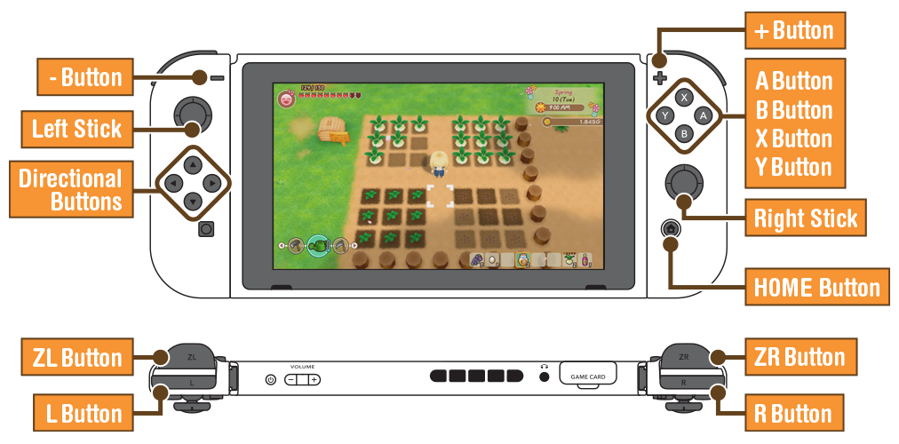

Controls
There are three different control presets available. This manual will show "Preset 1." You may change the control preset at any time from the "Button Presets" section of the Settings menu.

Field Controls
| Left Stick | Tilt lightly to walk, or fully to run. |
|---|---|
| Right Stick | Choose and hold an item from the Bag. |
| Directional Buttons | Left/Right: Equip a tool from the Tool Pocket. Up/Down: Adjust camera angle. |
| A Button | Talk to people, examine objects, and pick up items. |
| B Button | Put away a held item. |
| X Button | Open the Menu Screen. |
| Y Button | Use your currently equipped tool. |
| L Button | Open the Tools section of the Menu Screen. |
| R Button | Hold to auto-run. |
| ZL Button | Whistle to call pets or stop residents. |
| ZR Button | Hold to sidestep. |
| ＋ Button | Open the Town Map. |
| - Button | Open the Farm Map. |
Menu Screen Controls
| Left Stick | Select. |
|---|---|
| A Button | Confirm. |
| B Button | Cancel. |
| L Button/R Button | Change submenu. |